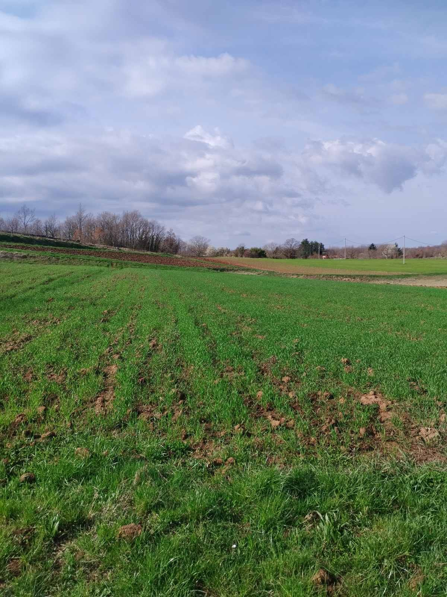

Naša proizvodnja
Na našem gospodarstvu njegujemo tradiciju, kvalitetu i predan rad kroz cijelu godinu.
Uzgoj i rad na gospodarstvu
OPG Tončić temelji svoj rad na dugogodišnjoj obiteljskoj tradiciji i svakodnevnoj brizi o poljima, vrtovima, voćnjaku i vinogradu. Kroz cijelu godinu posvećujemo pažnju uzgoju domaćih proizvoda kako bismo osigurali njihovu kvalitetu i svježinu.
Na našem gospodarstvu uzgajamo različite vrste voća i povrća, među kojima se ističu češnjak, luk, krumpir, šljive, kruške, smokve, grožđe, jabuke i rajčice. Posebno mjesto zauzima grožđe od kojeg nastaje naše domaće crno i bijelo vino.
Svaki dio proizvodnje zahtijeva trud, iskustvo i predan rad, od pripreme tla i sadnje pa sve do berbe i završne obrade proizvoda. Upravo zato nastojimo sačuvati prirodan pristup uzgoju i ponuditi proizvode koji odražavaju tradiciju i kvalitetu našega kraja.

Promotivni video
U videu donosimo dio atmosfere s našeg gospodarstva, prikaz rada na poljima, voćnjaku i vinogradu te proizvodnje domaćih proizvoda kroz različite dijelove godine.